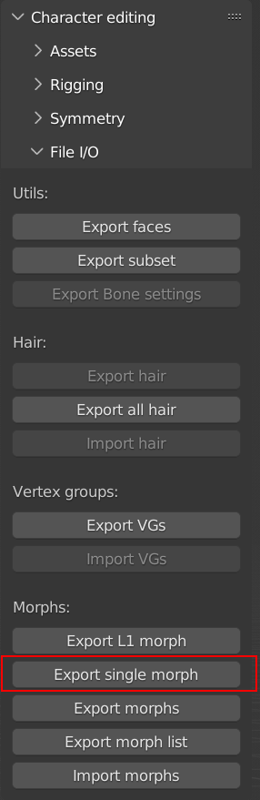

Character editing¶
Base¶
Apart from character creating CharMorph also has editing tools that helps to integrate new characters to CharMorph, as well as edting existing ones.
Structure¶
Every Characer is located in (Add-on)/data/characters/(character-name)
The folder structure is usually like;
- hairstyles:
each individual hairstyles is stored as numpy vertices.
- joints:
Joint positions are stored using vertex weights.
- morphs:
All morphs are stored here including L1/L2/L3 morph types.
- weights:
vertex weights are stored, here as a single numpy file based on rig set.
- char.blend:
the base of the character is stored here, without shapekeys or vertex weights, all material slots should be blank and be configured in the config file.
- config.yaml:
the configuration of the characters such as texture sets, metadata, rig types, etc
- eyebrows.blend:
hair is stored using blender’s particle system on a desired mesh and each of them must be enabled in the viewport. then they are added in the hair menu at user discretion.
- rigs.blend:
metarig data is stored, and a rig is generated based on internal/external blender plugins like rigify/auto-rig pro.
- faces.npy:
Stores the default topology vertuces and allows the altnernate topology feature to work on a given character.
Morphs¶
Morphs are the Lifeblood of all Character Creators, including Charmorph.
They work similarly to Shapekeys but support a destructive workflow Morphs are Created by exporting Shapekeys to external files instead of being stored in the mesh itself.
Morph Level:
- L1:
Reference Body Type: (Shape Basis) Each L1 Morph can have it’s own set of L2/L3 Morphs
- L2:
Minor Morphs: This is where most of the morphs are and are the ones that make characters look more unique.
- L3:
Expression Morphs: This is for Facial Action Coding System (FACS) Shapekeys
L2 Morphs:
{kind=link}
Exports Morph as a numpy file with the
.npyfile extension
Note: if you unfamiliar with regex, remove the morph regex expressions when exporting morphlists or multiple morphs.
Metadata:
All L2/L3 Morphs must be listed without their extension in their respective morphs.json files in order to be recognized by the add-on.
Syntax is simple for those accustomed to JSON.
{ "morph": "FILENAME"},
By default Morphs will be able to only go from 0 to 1 but can be overidden by this syntax
{ "morph": "FILENAME", "min": -1.0, "max": 1.0},
The UI sorts the morph into categories based on the first word of the morph without a seperator so in order to keep the UI Clean it’s reccomended to follows this naming scheme.
CategoryName_Morph
For Example:
Chin_Mentalis_Portrusion
or Fantasy_No_Nose
Charmorph also has a UI Seperator to help keep things in the same category organized and less confusing to look at
{ "separator": true},
Rigging¶
While morphing, your character can sufficiently change proportions so bone locations need to be adjusted too. In CharMorph this is implemented by binding bone locations to vertex groups.
Each bone joint has a special vertex group named
joint_{bone name}_{head|tail}. Joint location is calculated as
weighted average of locations of vertices included in the group,
optionally offseted by some constant location.
These vertex groups can be created manually using Edit mode or
weight painting, or then can be created by CharMorph rigging tools.
To use CharMorph rigging tools you need to select character mesh in “Char” property of Rigging panel and have metarig in edit mode.
“Selected joints to VG” button moves selected joints to their final positions according to their vertex groups.
“Recalc vertex groups” button calculates vertex group for selected joint according to selected calculation algorighm. If “Auto snap” option is enabled it also move the joint to the calculated position
There are different calculation algorighms for different types of joints. Hsually we have 3 types of joints:
interior joints: the most common type of joints. They are located inside character mesh. They include limbs, spine, neck and head.
surface joints: located on the surface of character mesh They are usually used for face expression bones
outer joints: located outside of character mesh They are usually used for helper bones like Rigify heel bone You need to use offsets to make CharMorph correctly place such bones.
Calculation methods for surface joints:
n nearest vertices: This method is usually used to snap joint to nearest vertex. In rare cases it also can be used to bind joint to multiple vertices also for interior joints.
nearest face: snaps joint to surface of nearest face. It also has “snap distance” option that allows optionally to snap joint to nearest edge or vertex if it is within specified distance.
nearest edge: snaps joint to nearest edge
by distance: searches vertices within selected distance and snaps joint to them
Calculation methods for interior bones:
Raycast: Idea of this method consists of casting of rays from joint location to 2 opposite directions When rays hit face surface, we calculate vertex groups for hit faces and then we assign certain weights to these counterpart faces to match joint location as close as possible. Several such ray pairs can be casted at once. “Raycast bone axes” uses bone axes to cast such ray pairs. “Raycast global” can either use global axes or use axes of selected object (usually empty)
Cross lines: This method takes certain amount of nearest vertices and iterates over all possible lines that can be drawn through every pair of vertices. Then it takes n lines that are nearest to the joints and assigns to each pair of vertices weights to match joint location as close as possible.
Bounding box: Tries to find 8 vertices that consist smallest bounding box of the joint and assign them weights according to joint location. Currenly this method doesn’t work very good so it is considered experimental
Other calculation methods:
Current: This method doesn’t change vertices consisting vertex group, it only recalculates weights of these vertices. It works well if there is not more then 4 vertices in current vertex group.
n nearest joints: Takes vertex groups of n already calculated joints and mixes them to match goint location as close as possible
Nearest bone: Takes vertex groups of 2 joints of nearest already calculated bone and mix their vertex groups to snap selected joint to middle of existing bone as close as possible to current joint location.
Neighbors equal: Snaps joint exactly to the center of neighbor joints (parent and child bones)
Neighbors weighted: Snaps joints to the middle of parent and child joints as close to current joint location as possible
When all vertex groups are calculated you can either use these groups directly in char.blend or you can export them to npz file and place them to “data/characters/{your character}/joints/{rig name}.npz”. You need to use “joint_” regular expression for exporting.
Config¶
Currently Charmorph has these configuration options documented.
Name |
Options |
Required? |
|---|---|---|
title |
Any |
Yes |
author |
Any |
Yes |
license |
Any |
Yes |
additional_authors |
Any |
No |
char_obj |
Has to match object Name in char.blend file |
Yes |
basis |
Has to match shapekey basis name that L2 morphs were based on |
Yes |